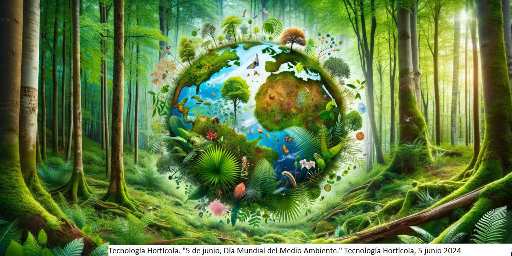
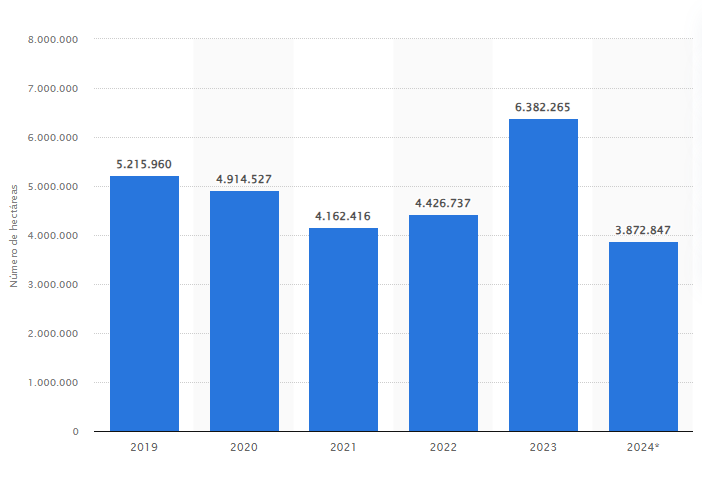
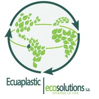
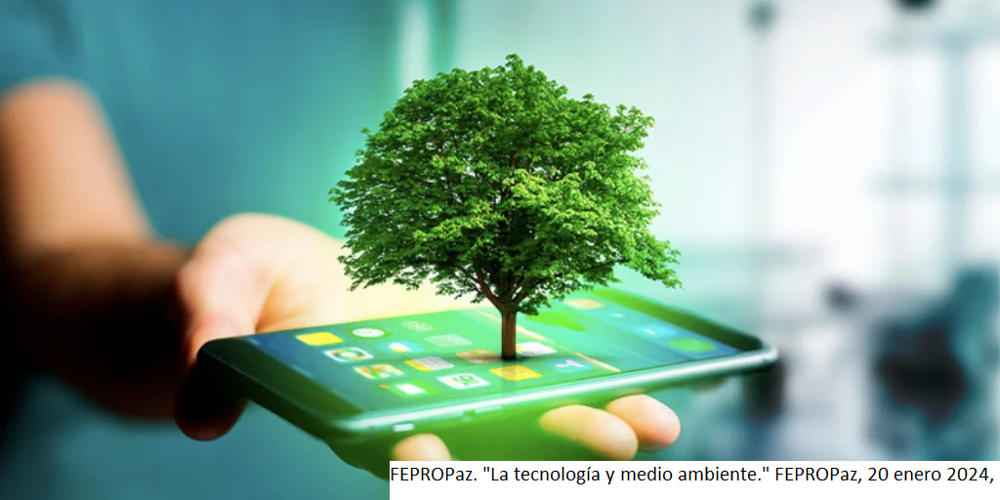

Un Llamado a la Acción: Salvaguardando Nuestro Planeta
En un mundo donde la tecnología avanza rápidamente, es fundamental reconocer el impacto que nuestras decisiones diarias tienen en el medio ambiente. Desde los residuos electrónicos que acumulamos hasta las emisiones generadas por nuestros dispositivos y vehículos, nuestra huella ecológica ha crecido de manera alarmante.
Air pollution is a major problem in many parts of the world. It occurs when harmful gases and tiny particles are released into the air, coming from sources like cars, factories, and power plants. Breathing polluted air can make people sick, especially children and older adults, causing issues such as asthma, coughing, and even heart disease. To help clean up the air, we can reduce our use of fossil fuels, plant more trees, and use public transportation.

Menu
Medio ambiente
El medio ambiente es nuestro hogar compartido y un sistema delicado que sustenta toda forma de vida en la Tierra. La interconexión entre los ecosistemas, el clima, y la biodiversidad es fundamental para mantener el equilibrio natural. Sin embargo, la actividad humana, como la deforestación, la contaminación y el cambio climático, está poniendo en peligro este equilibrio. Es esencial adoptar prácticas sostenibles y promover la conservación para proteger nuestro planeta y asegurar un futuro saludable para las próximas generaciones.
Contaminación en el medio ambiente de Aparatos Electronicos
El Programa para el Medio Ambiente de las Naciones Unidas (PNUMA) calcula que cada año generamos a nivel mundial 50 millones de toneladas de basura electrónica. Del total de esa chatarra, los aparatos que contienen metales pesados como el cadmio, el cromo, el plomo o el mercurio son los que pueden causar más problemas ambientales. También sumaríamos aquellos que incluyen sustancias tóxicas como gases de refrigeración
Air pollution is a critical environmental problem that affects human health and the well-being of the planet. Pollutants, such as carbon dioxide, carbon monoxide and fine particulate matter, come from a variety of sources, including vehicle traffic, industry and the burning of fossil fuels.
Aparatos Electronicos contaminantes
Televisiones de pantalla plana.El gas utilizado en su fabricación incrementa el calentamiento global, de acuerdo con la revista científica New Scientist.
Los ordenadores, portátiles o de sobremesa. Sabemos que durante su vida útil contaminan porque emiten CO2, pero, además, si no los reciclamos correctamente, ese ciclo continúa
Lámparas, ya sean las bombillas fluorescentes compactas e incluso las de bajo consumo que contienen mercurio. Aunque su contenido es menor que en las incandescentes tradicionales, es muy importante que, una vez fundidas, las llevemos a un punto de recogida
Aparatos de refrigeración como los aires acondicionados, congeladores y frigoríficos. Estos dependen, entre otros, de los hidrofluorocarburos (HFC) como refrigerantes, considerados a su vez como gases de efecto invernadero.
Efectos contaminantes
La contaminación ambiental tiene un impacto devastador tanto en el medio ambiente como en la salud humana. Las emisiones tóxicas, la deforestación y la acumulación de residuos no sólo alteran los ecosistemas sino que también afectan la calidad del aire, el agua y el suelo. Estos cambios pueden provocar enfermedades respiratorias y cardiovasculares e incluso cáncer, especialmente en poblaciones vulnerables. La contaminación también puede cambiar los patrones climáticos, acelerar el derretimiento de los glaciares y empeorar el cambio climático. La lucha contra la contaminación es esencial para garantizar un futuro saludable y sostenible para las generaciones futuras.
Los incendios forestales son un claro ejemplo directo en la contaminación ambiental:
Datos de la Secretaría Nacional de Gestión de Riesgos, que monitorea estos eventos, evidencian que, a lo largo de 2024, hubo 5.815 incendios forestales en todo el país. Este es el número más alto de incendios, y va acompañado del más alto número de hectáreas quemadas desde 2020, lo que marca un lamentable récord.Los incendios liberan grandes cantidades de dióxido de carbono (CO2), metano (CH4) y óxidos de nitrógeno (NOx), contribuyendo al cambio climático. En 2020, se estimó que los incendios forestales globales emitieron más de 5.6 mil millones de toneladas de CO2, lo que equivale al 10% de las emisiones globales anuales de CO2.Los incendios también pueden afectar las fuentes de agua, ya que las cenizas y los contaminantes de los incendios son arrastrados por la lluvia hacia ríos y lagos, deteriorando la calidad del agua.

Emisiones de Gases de una Persona
El uso de tecnologías cotidianas, como teléfonos móviles, fundas plásticas y automóviles, contribuye significativamente a la emisión de gases de efecto invernadero. Los celulares generan CO2 por la electricidad necesaria para cargarlos y la fabricación de sus componentes. Las fundas plásticas, a menudo de un solo uso, tienen un alto costo ambiental en su producción y desecho, aumentando la contaminación por plásticos. Además, cada viaje en automóvil privado produce una considerable cantidad de CO2 debido al consumo de combustibles fósiles. Incluso al hacer ejercicio, se generan emisiones contaminantes, aunque en menor medida. Todos estos factores, aunque a menudo son subestimados, son importantes en la huella de carbono personal, y su reducción es crucial para mitigar el cambio climático y proteger el medio ambiente.
Calculadora de Emisiones de Gases
Uso del Celular
Impacto de Fundas Plásticas
Uso de Carros
Soluciones para Reducir Emisiones de Gases Contaminantes
Apaga o desconecta dispositivos que no se estén utilizando para evitar el consumo innecesario de energía.
Opta por fundas de materiales sostenibles y reutilizables, como silicona o bioplásticos.
Utiliza el transporte público, bicicletas o caminatas en lugar de automóviles privados siempre que sea posible.
Participa en campañas que informen sobre la huella de carbono personal y la importancia de reducir las emisiones.
Elegir productos con menor contenido de compuestos orgánicos volátiles y reducir las fugas de gas LP.
Emplear el agua y la energía de manera racional y eficiente. Si es viable, instalar paneles solares y sistemas de calentamiento solar de agua. Elegir sistemas de calefacción, refrigeración y aire acondicionado de alta eficiencia.
🌱 Empresas del Ecuador que cuidan el medio ambiente
Pronaca,una de las principales empresas del sector alimenticio en Ecuador, ha implementado diversas iniciativas ambientales. Opera 21 plantas de tratamiento de aguas residuales, lo que ha permitido una reducción del 7.9% en el consumo de agua en 2023. Además, gestiona aproximadamente 700 sistemas de gestión ambiental, incluyendo tanques sépticos, sistemas de compostaje y biodigestores, optimizando el uso de recursos naturales. La empresa también convierte más de 15,000 toneladas de residuos en soluciones para la agricultura sostenible, alineándose con varios Objetivos de Desarrollo Sostenible (ODS) .
La Fabril, destacada en la producción de alimentos y productos de cuidado del hogar, ha adoptado prácticas sostenibles en sus operaciones. Es pionera en Ecuador en la investigación para la producción de biocombustibles y bioquímicos biodegradables. La empresa cuenta con la certificación ISO 14001 desde 2006, que avala su sistema de gestión ambiental y su compromiso con la mejora continua y la prevención de la contaminación .
Tesalia CBC,productora de bebidas como Güitig y Pepsi, ha establecido alianzas estratégicas para promover la sostenibilidad. En colaboración con Holcim Ecuador, firmó un convenio para reutilizar más de 41,000 m³ de agua tratada durante cinco años, equivalente a 16 piscinas olímpicas. Esta iniciativa busca gestionar de manera responsable el uso del agua en sus operaciones, contribuyendo a la sostenibilidad de los recursos hídricos .
Ecuaplastic se dedica a la transformación de residuos plásticos en nuevos productos, fomentando la economía circular y el reciclaje industrial. La empresa ha desarrollado materiales innovadores como Ecoyarn, un hilo elaborado con 100% de polyAl reciclado, derivado de envases para bebidas. Ecuaplastic se posiciona como líder en la creación de procedimientos para el procesamiento de residuos difíciles de reciclar, manteniendo una visión de calidad y eficiencia .
Biorgánica, en el sector agrícola, utiliza técnicas de agricultura orgánica que protegen la biodiversidad y mantienen la salud del suelo. Estas prácticas incluyen la estabilización de los agroecosistemas y el desarrollo de procesos biológicos óptimos, relacionando las actividades agrícolas con la conservación de la biodiversidad. La agricultura orgánica también depende de la estabilización de los agroecosistemas y del mantenimiento del equilibrio ecológico .

Soluciones con tecnologías
Energías Renovables como la solar, eólica e hidroeléctrica reduce la dependencia de los combustibles fósiles, disminuyendo las emisiones de CO2 y otros contaminantes.
Filtros de Aire y Purificadores para espacios urbanos pueden reducir las partículas contaminantes (PM2.5) y mejorar la calidad del aire, especialmente en áreas con alta densidad de población.
Las tecnologías de reciclaje automatizado y la inteligencia artificial pueden mejorar la eficiencia del reciclaje, asegurando que más materiales sean reutilizados y reduciendo la cantidad de residuos en vertederos.
La instalación de sensores que monitorean la calidad del aire, el agua y el suelo en tiempo real permite una mejor gestión de la contaminación y la implementación de medidas correctivas de forma más rápida.
.png)